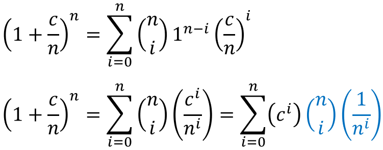
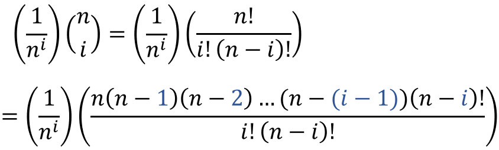
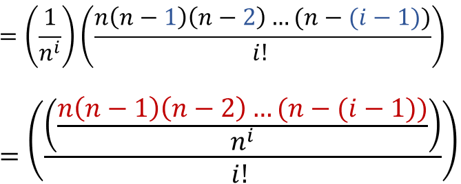
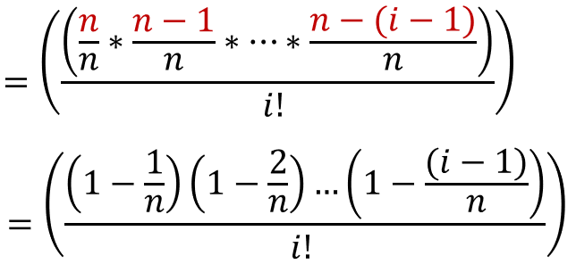
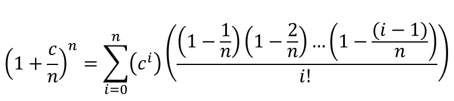
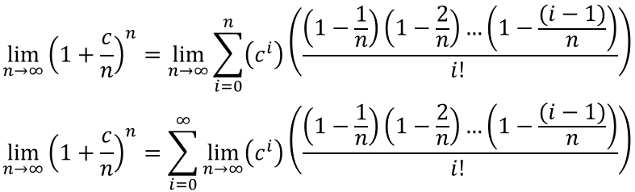
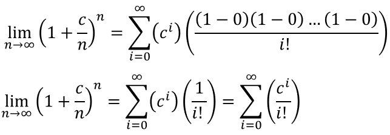
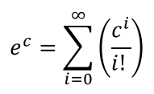

Before starting the proof, you have to be familiar with the binomial theorem:

Let a = 1 and b = c/n:
Now lets focus on the blue part of the above equation:
Now lets simplify further:
Look at the red part, there are i terms in total:
So basically:
Now let n -> ∞:
Lets simplify:
We can substitute the limit on the left hand side with ec:
To understand why the limit is equal to ec, read this.